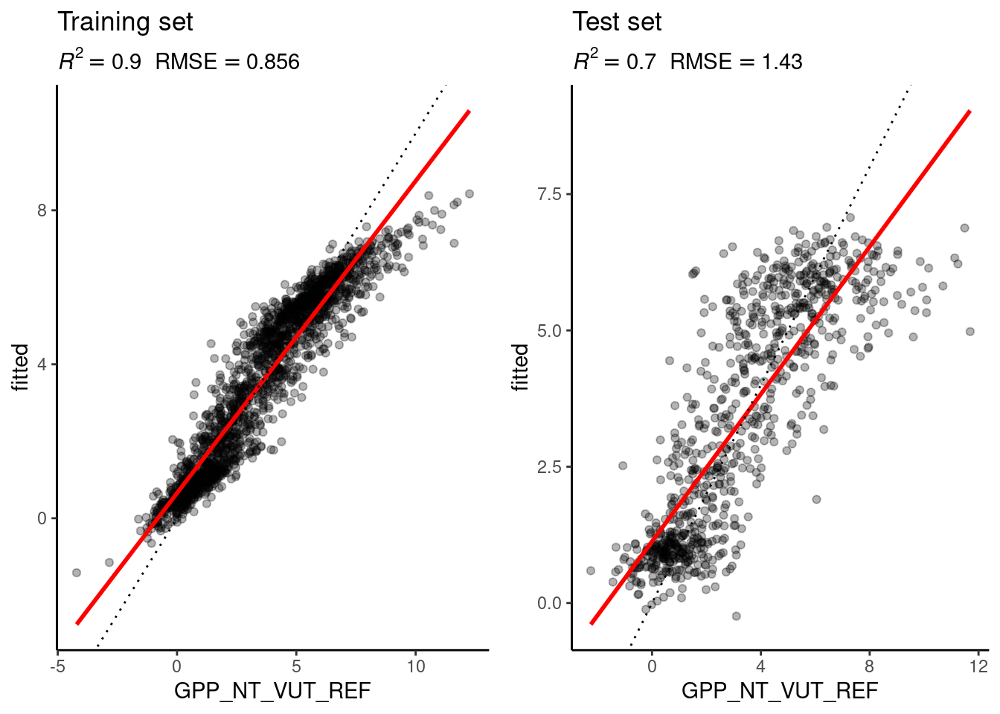
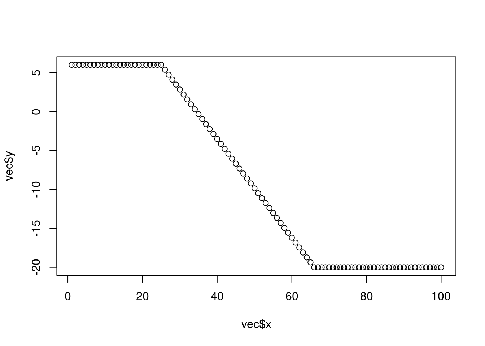

A Solutions
A.1 Getting Started
Dimensions of a circle
- Given the radius of a circle write a few lines of code that calculates its area and its circumference. Run your code with different values assigned of the radius.
radius <- 1
area <- pi * radius^2
circum <- 2 * pi * radius- Print the solution as text.
print(paste("Radius:", radius, " Circumference:", circum))## [1] "Radius: 1 Circumference: 6.28318530717959"Sequence of numbers
Generate a sequence of numbers from 0 and \(\pi\) as a vector with length 5.
seq(0, pi, length.out = 5)## [1] 0.0000000 0.7853982 1.5707963 2.3561945 3.1415927Gauss sum
Rumors have it that young Carl Friedrich Gauss was asked in primary school to calculate the sum of all natural numbers between 1 and 100. He did it in his head in no time. We’re very likely not as intelligent as young Gauss. But we have R. What’s the solution?
sum(1:100)## [1] 5050Gauss calculated the sum with a trick. The sum of 100 and 1 is 101. The sum of 99 and 2 is 101. You do this 50 times, and you get \(50 \times 101\). Demonstrate Gauss’ trick with vectors in R.
vec_a <- 1:50
vec_b <- 100:51
vec_c <- vec_a + vec_b
# each element is 101
vec_c## [1] 101 101 101 101 101 101 101 101 101 101 101 101 101 101 101 101 101 101 101
## [20] 101 101 101 101 101 101 101 101 101 101 101 101 101 101 101 101 101 101 101
## [39] 101 101 101 101 101 101 101 101 101 101 101 101# the length of vectors is fifty. 50 * 101
sum(vec_c)## [1] 5050Magic trick algorithm
Define a variable named x that contains an integer value and perform the following operations in sequence:
- Redefine
xby adding 1. - Double the resulting number, over-writing
x. - Add 4 to
xand save the result asx. - Redefine
xas half of the previous value ofx. - Subtract the originally chosen arbitrary number from
x.
Print x. Restart the algorithm defined above by choosing a new arbitrary natural number.
x <- -999 # arbitrary integer
x_save <- x # save for the last step
x <- x + 1
x <- x * 2
x <- x + 4
x <- x / 2
x - x_save## [1] 3Vectors
Print the object datasets::rivers and consult the manual of this object.
- What is the class of the object?
- What is the length of the object?
- Calculate the mean, median, minimum, maximum, and the 33%-quantile across all values.
class(datasets::rivers)## [1] "numeric"length(datasets::rivers)## [1] 141mean(datasets::rivers)## [1] 591.1844# other functions can easily be found on the internet ;-)Data frames
Print the object datasets::quakes and consult the manual of this object.
- Determine the dimensions of the data frame using the respective function in R.
- Extract the vector of values in the data frame that contain information about the Richter Magnitude.
- Determine the value largest value in the vector of event magnitudes.
- Determine the geographic position of the epicenter of the largest event.
dim(datasets::quakes)## [1] 1000 5vec <- datasets::quakes$mag
max(vec)## [1] 6.4idx <- which.max(vec) # index of largest value
# geographic positions defined by longitude and latitude (columns long and lat)
datasets::quakes$long[idx]## [1] 167.62datasets::quakes$lat[idx]## [1] -15.56Workspace
Create a new R project and create sub-directories in a meaningful way (as described in this Chapter). Create an RMarkdown file in your new project which implements your solutions to above exercises. Give the file a title, implement some structure in the document, and write some text explaining what your code does.
No solutions provided.
A.2 Programming primers
Gauss variations
Use a for loop to compute the sum of all natural numbers from 1 to 100. Print the result to the screen. Repeat this exercise but use a while loop.
# 1a. for-loop to compute sum from 1 - 100
sum <- 0
for (i in 1:100){
sum <- sum + i # for-loop iterating from 1 to 100
}
print(sum)## [1] 5050# 1b. while-loop to compute sum from 1 - 100
loop_status <- TRUE
counter <- 0
sum <- 0
while (loop_status) { # while-loop is repeated as long as loop_status is true
counter <- counter + 1
sum <- sum + counter
if (counter == 100) loop_status <- FALSE
}
print(sum)## [1] 5050Add up all numbers between 1 and 100 that are at the same time a multiple of 3 and a multiple of 7. Print the result to the screen in the form of: The sum of multiples of 3 and 7 within 1-100 is: {your result}.
sum <- 0
for (i in seq(100)) {
if (i %% 3 == 0 && i %% 7 == 0 ) {
sum <- sum + i
}
}
print(paste0("The sum of multiples of 3 and 7 within 1-100 is: ", sum))## [1] "The sum of multiples of 3 and 7 within 1-100 is: 210"Nested loops
Given a matrix mymat and a vector myvec (see below), implement the following algorithm:
- Start with the first row in
mymat. - Fill all missing values in the current row of
mymatwith the maximum value inmyvec. - Drop the maximum value from
myvec. - Proceed to the next row of
mymatand repeat steps 2-4.
mymat and myvec are defined as:
mymat <- matrix(c(6, 7, 3, NA, 15, 6, 7,
NA, 9, 12, 6, 11, NA, 3,
9, 4, 7, 3, 21, NA, 6,
rep(NA, 7)),
nrow = 4, byrow = TRUE)
myvec <- c(8, 4, 12, 9, 15, 6)for (i in 1:nrow(mymat)){
for (j in 1:ncol(mymat)){
if (is.na(mymat[i,j])){
mymat[i,j] <- max(myvec)
}
}
myvec <- myvec[-which.max(myvec)] # update the B vector removing the maximum value
}
mymat## [,1] [,2] [,3] [,4] [,5] [,6] [,7]
## [1,] 6 7 3 15 15 6 7
## [2,] 12 9 12 6 11 12 3
## [3,] 9 4 7 3 21 9 6
## [4,] 8 8 8 8 8 8 8Interpolation
Define a vector \(\vec{v}\) of length 100. Define the vector so that \(v_i = 6\), for \(i = 1 : 25\) and \(v_i = -20\), for \(i = 66 : 100\). Remaining elements are to be defined as ‘missing’. Linearly interpolate missing values that are not defined. Plot the values of \(\vec{v}\) using plot(vec).
vec <- rep(NA, 100) # initialize vector of length 100 with NA
vec[1:25] <- 6 # populate first 25 elements of 'vec' with 6.
vec[66:100] <- -20 # populate elements 66:100 with -20.
# Determine index of last non-missing value before gap
last_non_na <- 1
while (!is.na(vec[last_non_na+1])) last_non_na <- last_non_na + 1
# determine index of first non-missing value after gap
first_non_na <- last_non_na + 1
while (is.na(vec[first_non_na])) first_non_na <- first_non_na + 1
# Get the increment that is needed for interpolation
last_value <- vec[last_non_na] # Last non-NA value
first_value <- vec[first_non_na] # First non-NA value
delta <- (last_value - first_value) / (last_non_na - first_non_na) # Change in y over change in x
# fill missing values incrementally
for (i in 2:length(vec)){
if (is.na(vec[i])) vec[i] <- vec[i-1] + delta
}
plot(vec)
# or short using the approx() function:
vec <- rep(NA, 100) # initialize vector of length 100 with NA
vec[1:25] <- 6 # populate first 25 elements of 'vec' with 6.
vec[66:100] <- -20 # populate elements 66:100 with -20.
vec <- approx(1:100, vec, xout = 1:100)
plot(vec)